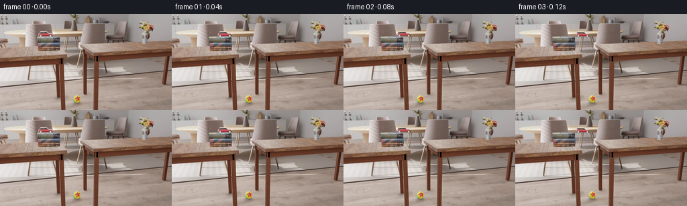
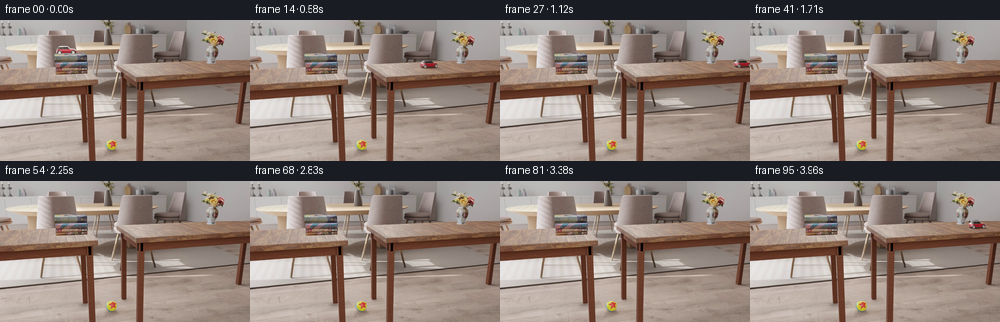
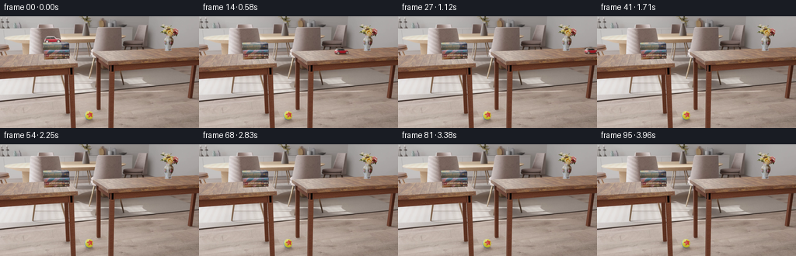
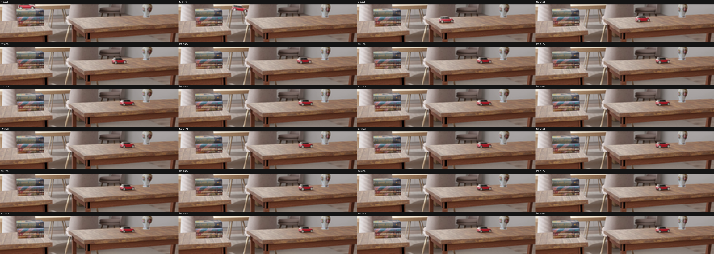
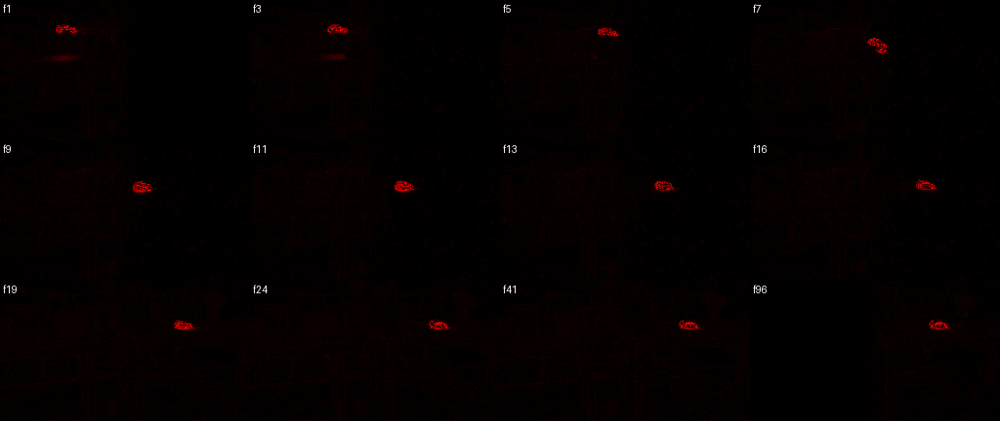
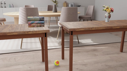
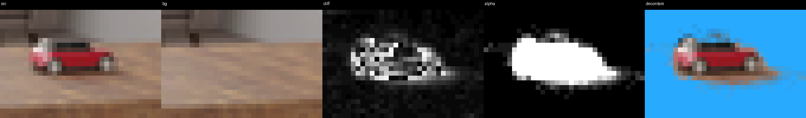
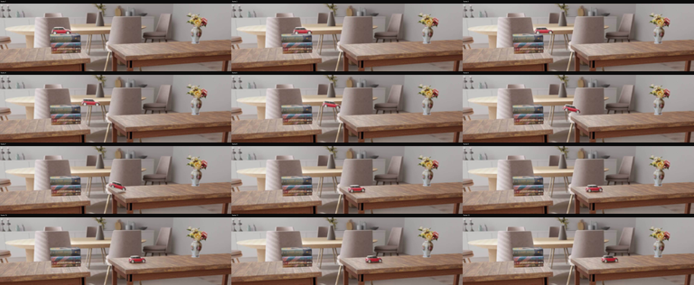
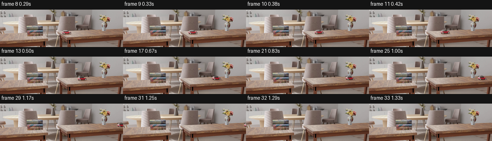
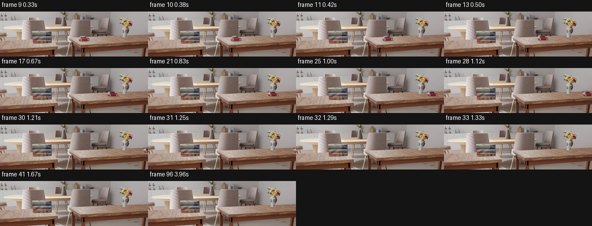

CODING AGENTS AS PIXEL WORLD MODELS
traex/GPT-5.6-Sol · pcve_0039
点击播放 · 原生 RGB 像素
编辑前的完整原视频
上方为编辑结果；原视频是模型获准使用的输入。下方为逐轮保存的编辑候选。
逐轮保存的候选
回放视频、检查图与代码变化。
每份候选均可单独播放。实际图片检查记录在下方工具轨迹中。
候选 01播放与检查图
点击播放 · 原生 RGB 像素


展开代码变化
--- 上一保存版本
+++ 本次保存版本
@@ -0,0 +1,154 @@
+"""Generate the counterfactual for the reduced-friction toy car.
+
+The source camera and every scene object except the car are static. The car is
+airborne at the beginning and first has sustained contact with the rear table
+at source index 7. Its measured post-contact horizontal motion is very close
+to constant deceleration. We retain the incoming/landing history verbatim,
+then reduce that measured deceleration to 0.3x and re-composite the car at the
+resulting position. The lower-friction car consequently continues off the
+right side of the visible tabletop instead of stopping in the middle.
+"""
+
+from pathlib import Path
+
+import cv2
+import numpy as np
+
+import artifact_io
+
+
+CASE_DIR = Path(__file__).resolve().parent
+
+# Difference-derived subpixel centers of the car in source frames 1..24.
+# These measurements are embedded to keep regeneration deterministic.
+SRC_X = np.array([
+ 66.867, 78.244, 88.228, 98.850, 109.619, 119.793,
+ 130.833, 138.127, 144.900, 151.072, 156.918, 162.295,
+ 167.203, 171.671, 175.495, 179.024, 182.037, 184.776,
+ 187.153, 188.819, 190.263, 191.353, 192.019, 192.268,
+], dtype=np.float32)
+SRC_Y = np.array([
+ 29.566, 29.635, 29.337, 29.624, 32.617, 37.013,
+ 45.593, 47.978, 47.564, 47.124, 46.879, 46.682,
+ 46.430, 46.229, 45.967, 45.769, 45.568, 45.499,
+ 45.441, 45.309, 45.229, 45.219, 45.210, 45.188,
+], dtype=np.float32)
+
+
+def clean_plate(frames: np.ndarray) -> np.ndarray:
+ """Construct the exact static plate from frames with disjoint car sites."""
+ # In the last frame x<168 is clean, while in the first frame x>135 is
+ # clean. The broad overlap allows an imperceptible cross-fade between two
+ # otherwise identical static renders and excludes both car locations.
+ x = np.arange(frames.shape[2], dtype=np.float32)[None, :, None]
+ mix = np.clip((x - 132.0) / 28.0, 0.0, 1.0)
+ return frames[-1].astype(np.float32) * (1.0 - mix) + frames[0].astype(np.float32) * mix
+
+
+def extract_sprite(frame: np.ndarray, plate: np.ndarray, cx: float, cy: float):
+ """Extract a softly antialiased car/shadow sprite against the clean plate."""
+ h, w = frame.shape[:2]
+ x0 = max(0, int(np.floor(cx - 27)))
+ x1 = min(w, int(np.ceil(cx + 28)))
+ y0 = max(0, int(np.floor(cy - 25)))
+ y1 = min(h, int(np.ceil(cy + 17)))
+
+ src = frame[y0:y1, x0:x1].astype(np.float32)
+ bg = plate[y0:y1, x0:x1].astype(np.float32)
+ delta = np.max(np.abs(src - bg), axis=2)
+
+ # Keep low-contrast antialiasing and the contact shadow only near pixels
+ # that definitely belong to the car. This rejects tiny render noise.
+ core = (delta > 9.0).astype(np.uint8)
+ neighborhood = cv2.dilate(core, np.ones((5, 5), np.uint8), iterations=1)
+ alpha = np.clip((delta - 1.3) / 7.0, 0.0, 1.0) * neighborhood
+ alpha = cv2.GaussianBlur(alpha.astype(np.float32), (3, 3), 0.42)
+ alpha = np.clip(alpha, 0.0, 1.0)
+
+ # Remove the old tabletop contribution from translucent edge pixels. It
+ # can then be placed over a different part of the wood without a box/halo.
+ a = alpha[..., None]
+ color = np.where(a > 0.055, (src - (1.0 - a) * bg) / np.maximum(a, 0.055), src)
+ color = np.clip(color, 0.0, 255.0).astype(np.float32)
+ return color, alpha, x0, y0
+
+
+def place_sprite(canvas: np.ndarray, color: np.ndarray, alpha: np.ndarray,
+ src_x0: int, src_y0: int, dx: float, dy: float) -> None:
+ """Translate a sprite by a subpixel offset and composite it in-place."""
+ h, w = canvas.shape[:2]
+ sh, sw = alpha.shape
+ target_x = src_x0 + dx
+ target_y = src_y0 + dy
+ ix = int(np.floor(target_x))
+ iy = int(np.floor(target_y))
+ fx = target_x - ix
+ fy = target_y - iy
+
+ # Warp inside a one-pixel transparent border, avoiding clipped filtering.
+ pc = cv2.copyMakeBorder(color, 1, 1, 1, 1, cv2.BORDER_CONSTANT, value=0)
+ pa = cv2.copyMakeBorder(alpha, 1, 1, 1, 1, cv2.BORDER_CONSTANT, value=0)
+ matrix = np.array([[1.0, 0.0, fx], [0.0, 1.0, fy]], dtype=np.float32)
+ wc = cv2.warpAffine(pc, matrix, (sw + 2, sh + 2), flags=cv2.INTER_LINEAR,
+ borderMode=cv2.BORDER_CONSTANT, borderValue=0)
+ wa = cv2.warpAffine(pa, matrix, (sw + 2, sh + 2), flags=cv2.INTER_LINEAR,
+ borderMode=cv2.BORDER_CONSTANT, borderValue=0)
+ ix -= 1
+ iy -= 1
+
+ xa, ya = max(ix, 0), max(iy, 0)
+ xb, yb = min(ix + sw + 2, w), min(iy + sh + 2, h)
+ if xa >= xb or ya >= yb:
+ return
+ sx0, sy0 = xa - ix, ya - iy
+ sx1, sy1 = sx0 + xb - xa, sy0 + yb - ya
+ a = wa[sy0:sy1, sx0:sx1, None]
+ canvas[ya:yb, xa:xb] = wc[sy0:sy1, sx0:sx1] * a + canvas[ya:yb, xa:xb] * (1.0 - a)
+
+
+def render() -> np.ndarray:
+ source = np.load(CASE_DIR / "source_pixels.npz")["rgb"]
+ plate = clean_plate(source)
+ output = source.copy()
+
+ # Source fit from contact onward: x = x0 + v0*n - .5*a*n^2,
+ # where a ~= 0.437 px/frame^2. Choose v0 so the first post-contact step
+ # exactly matches the source, then use 30% of that deceleration.
+ contact = 7 # zero-based frame index
+ x0 = float(SRC_X[contact])
+ source_a = 0.437
+ new_a = 0.3 * source_a
+ v0 = float(SRC_X[contact + 1] - SRC_X[contact]) + 0.5 * new_a
+
+ for frame_index in range(contact, len(output)):
+ n = frame_index - contact
+ desired_x = x0 + v0 * n - 0.5 * new_a * n * n
+
+ # Use the source pose whose position is closest to the new position.
+ # After exceeding the factual stopping point, use the final settled
+ # pose while continuing its translation along the tabletop.
+ if desired_x <= SRC_X[-1]:
+ source_time = float(np.interp(desired_x, SRC_X[contact:],
+ np.arange(contact, len(SRC_X))))
+ si = int(np.clip(round(source_time), contact, len(SRC_X) - 1))
+ desired_y = float(np.interp(source_time, np.arange(len(SRC_Y)), SRC_Y))
+ else:
+ si = len(SRC_X) - 1
+ desired_y = float(SRC_Y[-1])
+
+ color, alpha, px, py = extract_sprite(source[si], plate,
+ float(SRC_X[si]), float(SRC_Y[si]))
+ canvas = plate.copy()
+ place_sprite(canvas, color, alpha, px, py,
+ desired_x - float(SRC_X[si]), desired_y - float(SRC_Y[si]))
+ output[frame_index] = np.clip(np.rint(canvas), 0, 255).astype(np.uint8)
+
+ return output
+
+
+if __name__ == "__main__":
+ frames = render()
+ assert frames.shape == (96, 144, 256, 3)
+ assert frames.dtype == np.uint8
+ artifact_io.save(frames, CASE_DIR)
+ print("saved 96-frame reduced-friction counterfactual")
候选 02播放与检查图
点击播放 · 原生 RGB 像素

展开代码变化
--- 上一保存版本
+++ 本次保存版本
@@ -106,6 +106,24 @@
canvas[ya:yb, xa:xb] = wc[sy0:sy1, sx0:sx1] * a + canvas[ya:yb, xa:xb] * (1.0 - a)
+def erase_source_car(canvas: np.ndarray, source_frame: np.ndarray,
+ plate: np.ndarray, cx: float, cy: float) -> None:
+ """Replace only the factual car and its shadow with the static clean plate."""
+ h, w = canvas.shape[:2]
+ x0 = max(0, int(np.floor(cx - 28)))
+ x1 = min(w, int(np.ceil(cx + 29)))
+ y0 = max(0, int(np.floor(cy - 25)))
+ y1 = min(h, int(np.ceil(cy + 18)))
+ src = source_frame[y0:y1, x0:x1].astype(np.float32)
+ bg = plate[y0:y1, x0:x1].astype(np.float32)
+ delta = np.max(np.abs(src - bg), axis=2)
+ core = (delta > 3.0).astype(np.uint8)
+ mask = cv2.dilate(core, np.ones((3, 3), np.uint8), iterations=1).astype(np.float32)
+ mask = cv2.GaussianBlur(mask, (3, 3), 0.5)[..., None]
+ region = canvas[y0:y1, x0:x1]
+ canvas[y0:y1, x0:x1] = region * (1.0 - mask) + bg * mask
+
+
def render() -> np.ndarray:
source = np.load(CASE_DIR / "source_pixels.npz")["rgb"]
plate = clean_plate(source)
@@ -120,9 +138,18 @@
new_a = 0.3 * source_a
v0 = float(SRC_X[contact + 1] - SRC_X[contact]) + 0.5 * new_a
+ stop_n = v0 / new_a
for frame_index in range(contact, len(output)):
n = frame_index - contact
- desired_x = x0 + v0 * n - 0.5 * new_a * n * n
+ # Coulomb friction cannot reverse the car: once speed reaches zero it
+ # remains at the stopping point (which is beyond the right image edge).
+ motion_n = min(float(n), stop_n)
+ desired_x = x0 + v0 * motion_n - 0.5 * new_a * motion_n * motion_n
+
+ # The landing frame and first post-landing frame coincide exactly with
+ # the measured source trajectory. Preserve them byte-for-byte.
+ if frame_index <= contact + 1:
+ continue
# Use the source pose whose position is closest to the new position.
# After exceeding the factual stopping point, use the final settled
@@ -138,7 +165,11 @@
color, alpha, px, py = extract_sprite(source[si], plate,
float(SRC_X[si]), float(SRC_Y[si]))
- canvas = plate.copy()
+ # Preserve each source frame everywhere except the factual car site.
+ canvas = source[frame_index].astype(np.float32).copy()
+ old_si = min(frame_index, len(SRC_X) - 1)
+ erase_source_car(canvas, source[frame_index], plate,
+ float(SRC_X[old_si]), float(SRC_Y[old_si]))
place_sprite(canvas, color, alpha, px, py,
desired_x - float(SRC_X[si]), desired_y - float(SRC_Y[si]))
output[frame_index] = np.clip(np.rint(canvas), 0, 255).astype(np.uint8)
候选 03播放与检查图
点击播放 · 原生 RGB 像素

展开代码变化
代码未变化；重新保存了产物。
候选 04播放与检查图
点击播放 · 原生 RGB 像素

展开代码变化
--- 上一保存版本
+++ 本次保存版本
@@ -117,8 +117,16 @@
src = source_frame[y0:y1, x0:x1].astype(np.float32)
bg = plate[y0:y1, x0:x1].astype(np.float32)
delta = np.max(np.abs(src - bg), axis=2)
- core = (delta > 3.0).astype(np.uint8)
- mask = cv2.dilate(core, np.ones((3, 3), np.uint8), iterations=1).astype(np.float32)
+ # Select only the dominant connected foreground component. A raw low
+ # threshold would also pick up harmless 1-4 level temporal render noise in
+ # the chair and tabletop, needlessly modifying unaffected pixels.
+ core = (delta > 6.0).astype(np.uint8)
+ count, labels, stats, _ = cv2.connectedComponentsWithStats(core, 8)
+ if count <= 1:
+ return
+ component = 1 + int(np.argmax(stats[1:, cv2.CC_STAT_AREA]))
+ core = (labels == component).astype(np.uint8)
+ mask = cv2.dilate(core, np.ones((5, 5), np.uint8), iterations=1).astype(np.float32)
mask = cv2.GaussianBlur(mask, (3, 3), 0.5)[..., None]
region = canvas[y0:y1, x0:x1]
canvas[y0:y1, x0:x1] = region * (1.0 - mask) + bg * mask
候选 05播放与检查图
可观测工具轨迹
实际执行的命令与返回图片。
命令 1exit 0
/bin/bash -lc "cat prompt.txt && printf '\\n--- GENERATION_RULES ---\\n' && cat GENERATION_RULES.md"
命令 2exit 2
/bin/bash -lc "find . -maxdepth 2 -type f -printf '%p\\n' | sort && printf '\\n--- ffprobe source candidates ---\\n' && for f in *.mp4 *.mov *.mkv *.webm 2>/dev/null; do [ -f \""'$f" ] && ffprobe -v error -show_entries format=filename,duration,size -show_entries stream=index,codec_name,codec_type,width,height,r_frame_rate,avg_frame_rate -of json "$f"; done'
命令 3exit 127
/bin/bash -lc "find . -maxdepth 2 -type f -printf '%p\\n' | sort; printf '\\n--- ffprobe ---\\n'; find . -maxdepth 1 -type f \\( -name '*.mp4' -o -name '*.mov' -o -name '*.mkv' -o -name '*.webm' \\) -print0 | xargs -0 -r -n1 ffprobe -v error -show_entries format=filename,duration,size -show_entries stream=index,codec_name,codec_type,width,height,r_frame_rate,avg_frame_rate -of json"
命令 4exit 0
/bin/bash -lc "printf '%s\\n' '--- source_info.json ---'; cat source_info.json; printf '%s\\n' '--- task_spec.json ---'; cat task_spec.json; printf '%s\\n' '--- npz ---'; python - <<'PY'
import numpy as np
z=np.load('source_pixels.npz')
print(z.files)
for k in z.files:
a=z[k]; print(k,a.shape,a.dtype,a.min(),a.max())
PY"命令 5exit 0
/bin/bash -lc "python - <<'PY'
import artifact_io, inspect
print('artifact_io:', artifact_io.__file__)
print(inspect.getsource(artifact_io.save))
PY"命令 6exit 0
/bin/bash -lc "python - <<'PY'
from PIL import Image,ImageDraw
import numpy as np, math
F=np.load('source_pixels.npz')['rgb']
# crops rear tabletop / car path, nearest enlargement; every 4 frames
ids=list(range(0,96,4)); scale=4
crop=(35,28,256,75); cw=(crop[2]-crop[0])*scale; ch=(crop[3]-crop[1])*scale
out=Image.new('RGB',(cw*4,(ch+22)*6),(20,20,20)); d=ImageDraw.Draw(out)
for j,i in enumerate(ids):
im=Image.fromarray(F[i]).crop(crop).resize((cw,ch),Image.Resampling.NEAREST)
x=(j%4)*cw;y=(j//4)*(ch+22)
out.paste(im,(x,y+22));d.text((x+3,y+3),f'f{i+1} {i/24:.2f}s',fill='white')
out.save('trajectory_contact.png')
# consecutive difference stats/bboxes threshold within ROI
for i in range(1,96):
a=F[i-1].astype(int);b=F[i].astype(int)
diff=np.max(abs(b-a),2)
yy,xx=np.where((diff>12)&(np.indices(diff.shape)[0]>=25)&(np.indices(diff.shape)[0]<76))
if len(xx):
print(i+1, len(xx), (xx.min(),yy.min(),xx.max(),yy.max()), round(float(diff[yy,xx].mean()),1))
PY"命令 7exit 0
/bin/bash -lc "python - <<'PY'
try:
import cv2; print('cv2',cv2.__version__)
except Exception as e: print('no cv2',e)
try:
import scipy; print('scipy',scipy.__version__)
except Exception as e: print('no scipy',e)
PY
python - <<'PY'
import numpy as np
from PIL import Image, ImageDraw
import cv2
F=np.load('source_pixels.npz')['rgb']
# background split, 16px blend
bg=np.empty_like(F[0],dtype=float)
for x in range(256):
t=np.clip((x-118)/20,0,1)
bg[:,x]=F[-1,:,x]*(1-t)+F[0,:,x]*t
bg=bg.astype(np.uint8)
Image.fromarray(bg).save('clean_background.png')
out=Image.new('RGB',(256*4,144*3),(20,20,20));d=ImageDraw.Draw(out)
for j,i in enumerate([0,2,4,6,8,10,12,15,18,23,40,95]):
diff=np.max(np.abs(F[i].astype(np.int16)-bg.astype(np.int16)),axis=2).astype(np.uint8)
# display x4 difference
heat=np.zeros_like(F[i]); heat[:,:,0]=np.minimum(255,diff*5)
im=Image.fromarray(heat)
x=(j%4)*256;y=(j//4)*144
out.paste(im,(x,y));d.text((x+3,y+3),f'f{i+1}',fill='white')
# comps threshold
m=((diff>10)&(np.indices(diff.shape)[0]>15)&(np.indices(diff.shape)[0]<70)).astype(np.uint8)
n,lab,stats,cent=cv2.connectedComponentsWithStats(m,8)
comps=sorted([(stats[k,4],tuple(stats[k,:4]),tuple(np.round(cent[k],1))) for k in range(1,n)],reverse=True)[:4]
print(i+1, comps)
out.save('diff_heat.png')
PY"命令 8exit 0
/bin/bash -lc "python - <<'PY'
import numpy as np, cv2
F=np.load('source_pixels.npz')['rgb']
# bg
x=np.arange(256)[None,:,None]; t=np.clip((x-110)/25,0,1)
B=(F[-1]*(1-t)+F[0]*t).astype(np.uint8)
xs=[];ys=[]
for i in range(24):
d=np.max(abs(F[i].astype(np.int16)-B.astype(np.int16)),2)
m=((d>8)&(np.indices(d.shape)[0]>15)&(np.indices(d.shape)[0]<65)).astype(np.uint8)
n,L,S,C=cv2.connectedComponentsWithStats(m,8)
cand=[]
for k in range(1,n):
if S[k,4]>20: cand.append((S[k,4],k))
k=max(cand)[1]
# weighted centroid diff, clipped
yy,xx=np.where(L==k); w=d[yy,xx].astype(float)
cx=(xx*w).sum()/w.sum();cy=(yy*w).sum()/w.sum()
xs.append(cx);ys.append(cy)
print(i,round(cx,3),round(cy,3),S[k].tolist())
for start in [6,7,8,9]:
ii=np.arange(start,23); coef=np.polyfit(ii-start,np.array(xs)[ii],2)
print('fit start',start,coef,'a/frame2=',2*coef[0])
PY"命令 9exit 0
/bin/bash -lc "python - <<'PY'
from PIL import Image,ImageDraw
import numpy as np,cv2
F=np.load('source_pixels.npz')['rgb']; x=np.arange(256)[None,:,None];t=np.clip((x-110)/25,0,1);B=(F[-1]*(1-t)+F[0]*t).astype(np.uint8)
s=22;x0,y0,x1,y1=177,35,211,58
src=F[s,y0:y1,x0:x1];bg=B[y0:y1,x0:x1];d=np.max(abs(src.astype(int)-bg.astype(int)),2).astype(np.uint8)
a=np.clip((d.astype(float)-2)/10,0,1)
# include only comps seeded high, expanding low pixels
low=(d>2).astype(np.uint8); high=d>12
n,L,S,C=cv2.connectedComponentsWithStats(low,8)
keep=np.zeros_like(low)
for k in range(1,n):
if np.any(high[L==k]) and S[k,4]>2: keep[L==k]=1
a*=keep
fg=np.where(a[:,:,None]>0.05,np.clip((src.astype(float)-(1-a[:,:,None])*bg)/np.maximum(a[:,:,None],.05),0,255),0).astype(np.uint8)
comp=(a[:,:,None]*fg+(1-a[:,:,None])*np.array([40,170,255])).astype(np.uint8)
ims=[src,bg,np.repeat(np.minimum(255,d[:,:,None]*8),3,2),np.repeat((a*255).astype(np.uint8)[:,:,None],3,2),comp]
out=Image.new('RGB',(34*12*5,23*12+25),(0,0,0));dr=ImageDraw.Draw(out)
for j,(im,label) in enumerate(zip(ims,['src','bg','diff','alpha','decontam'])):
out.paste(Image.fromarray(im).resize((34*12,23*12),Image.Resampling.NEAREST),(j*34*12,25));dr.text((j*34*12+3,3),label,fill='white')
out.save('sprite_extract.png')
PY"命令 10exit 0
/bin/bash -lc "python - <<'PY'
from PIL import Image,ImageDraw
import numpy as np
F=np.load('source_pixels.npz')['rgb']
ids=range(12); S=6; W=256*S;H=75*S
out=Image.new('RGB',(W*3,(H+24)*4),(10,10,10));d=ImageDraw.Draw(out)
for j,i in enumerate(ids):
im=Image.fromarray(F[i,:75]).resize((W,H),Image.Resampling.NEAREST)
x=(j%3)*W;y=(j//3)*(H+24); out.paste(im,(x,y+24));d.text((x+5,y+4),f'frame {i+1}',fill='white')
out.save('early_frames.png')
PY"命令 11exit 0
/bin/bash -lc 'python generate.py'
命令 12exit 0
/bin/bash -lc "python - <<'PY'
from pathlib import Path
import numpy as np
from PIL import Image,ImageDraw
S=np.load('source_pixels.npz')['rgb']
# load output PNGs, because these are exact save input
O=np.stack([np.array(Image.open(f'frames/{i:02d}.png').convert('RGB')) for i in range(96)])
print('shape/dtype',O.shape,O.dtype)
print('first frame exact',np.array_equal(O[0],S[0]))
print('pre-contact exact frames 1-7',np.array_equal(O[:7],S[:7]))
print('changed pixels frame 8',np.count_nonzero(np.any(O[7]"'!=S[7],axis=2)))
print('"'output files',[(p,Path(p).stat().st_size) for p in ['pixels.npz','inspection.png','transition_check.png','index.html']])
# Make detailed contact/exit strip.
ids=[6,7,8,10,12,16,20,24,28,31,32,36]
out=Image.new('RGB',(256*4,(90+20)*3),(20,20,20));d=ImageDraw.Draw(out)
for j,i in enumerate(ids):
im=Image.fromarray(O[i,:90])
x=(j%4)*256;y=(j//4)*110;out.paste(im,(x,y+20));d.text((x+3,y+2),f'frame {i+1} {i/24:.2f}s',fill='white')
out.save('detail_validation.png')
PY"命令 13exit 0
/bin/bash -lc 'mkdir -p candidate_v1 && cp pixels.npz inspection.png transition_check.png index.html candidate_v1/ && python generate.py'
命令 14exit 0
/bin/bash -lc "python - <<'PY'
from pathlib import Path
import numpy as np
from PIL import Image,ImageDraw
S=np.load('source_pixels.npz')['rgb']
O=np.stack([np.array(Image.open(f'frames/{i:02d}.png').convert('RGB')) for i in range(96)])
print('shape/dtype',O.shape,O.dtype)
for n in [1,7,8,9]: print('first',n,'exact:',np.array_equal(O[:n],S[:n]))
print('changed counts:',[(i+1,int(np.count_nonzero(np.any(O[i]"'!=S[i],2)))) for i in [7,8,9,10,14,20,27,31,32,40,54,68,81,95]])
# Track all changed-pixel bbox at late frames; should be localized at old/new car only.
for i in [8,9,10,14,20,27,31,32,40,95]:
m=np.any(O[i]!=S[i],2); yy,xx=np.where(m)
print('"'frame',i+1,'bbox',None if not len(xx) else (int(xx.min()),int(yy.min()),int(xx.max()),int(yy.max())))
# detailed strip of intervention and exit
ids=[7,8,9,10,12,16,20,24,28,30,31,32]
out=Image.new('RGB',(256*4,(78+20)*3),(20,20,20));d=ImageDraw.Draw(out)
for j,i in enumerate(ids):
x=(j%4)*256;y=(j//4)*98; out.paste(Image.fromarray(O[i,:78]),(x,y+20));d.text((x+3,y+2),f'frame {i+1} {i/24:.2f}s',fill='white')
out.save('detail_validation_v2.png')
print('artifacts',[(p,Path(p).stat().st_size) for p in ['pixels.npz','inspection.png','transition_check.png','index.html','generate.py']])
PY"命令 15exit 0
/bin/bash -lc "python - <<'PY'
import numpy as np,cv2
F=np.load('source_pixels.npz')['rgb'];x=np.arange(256)[None,:,None];mix=np.clip((x-132)/28,0,1);B=F[-1]*(1-mix)+F[0]*mix
for i in [7,8,9,14,20,23,40,95]:
cx=[138.127,144.9,151.072,175.495,190.263,192.268][min([7,8,9,14,20,23].index(i) if i in [7,8,9,14,20,23] else 5,5)] if False else ( [138.127,144.9,151.072,175.495,190.263,192.268][[7,8,9,14,20,23].index(i)] if i in [7,8,9,14,20,23] else 192.268)
cy=47 if i<14 else 45.2
x0=int(cx-28);x1=int(cx+29);y0=int(cy-25);y1=int(cy+18)
d=np.max(abs(F[i,y0:y1,x0:x1].astype(float)-B[y0:y1,x0:x1]),2)
low=(d>2).astype(np.uint8);n,L,S,C=cv2.connectedComponentsWithStats(low,8)
print('\\nf',i+1,'crop',x0,y0)
for k in range(1,n):
if S[k,4]>=2:
yy,xx=np.where(L==k); print(S[k,4],(S[k,0]+x0,S[k,1]+y0,S[k,2],S[k,3]),'max',round(d[yy,xx].max(),1),'ctr',tuple(np.round(C[k]+[x0,y0],1)))
PY"命令 16exit 0
/bin/bash -lc "mkdir -p candidate_v2 && cp pixels.npz inspection.png transition_check.png index.html candidate_v2/ && python generate.py && python - <<'PY'
import numpy as np
from PIL import Image
S=np.load('source_pixels.npz')['rgb']
O=np.stack([np.array(Image.open(f'frames/{i:02d}.png').convert('RGB')) for i in range(96)])
for i in [8,9,10,14,20,27,31,32,40,54,95]:
m=np.any(O[i]"'!=S[i],2); yy,xx=np.where(m)
print(i+1,len(xx), None if not len(xx) else (int(xx.min()),int(yy.min()),int(xx.max()),int(yy.max())))
PY'命令 17exit 1
/bin/bash -lc "python - <<'PY'
import numpy as np
from PIL import Image,ImageDraw,ImageChops
O=np.stack([np.array(Image.open(f'frames/{i:02d}.png').convert('RGB')) for i in range(96)])
ids=[8,9,10,12,16,20,24,27,29,30,31,32,40,95]
out=Image.new('RGB',(256*4,(78+20)*4),(20,20,20));d=ImageDraw.Draw(out)
for j,i in enumerate(ids):
x=(j%4)*256;y=(j//4)*98;out.paste(Image.fromarray(O[i,:78]),(x,y+20));d.text((x+3,y+2),f'frame {i+1} {i/24:.2f}s',fill='white')
out.save('detail_validation_final.png')
PY
python generate.py >/tmp/regenerate.log && cat /tmp/regenerate.log && sha256sum pixels.npz inspection.png transition_check.png index.html generate.py"命令 18exit 0
/bin/bash -lc "python generate.py > regenerate.log && cat regenerate.log && sha256sum pixels.npz inspection.png transition_check.png index.html generate.py && python - <<'PY'
import numpy as np
from pathlib import Path
from PIL import Image
z=np.load('pixels.npz')['pixels']
print('packed artifact shape/dtype:',z.shape,z.dtype)
print('frame png count:',len(list((Path('frames')).glob('*.png'))))
print('required dimensions:',Image.open('frames/00.png').size)
PY"视觉工具实际返回图片 1

视觉工具实际返回图片 2

视觉工具实际返回图片 3

视觉工具实际返回图片 4

视觉工具实际返回图片 5

视觉工具实际返回图片 6

视觉工具实际返回图片 7

视觉工具实际返回图片 8

视觉工具实际返回图片 9

视觉工具实际返回图片 10

视觉工具实际返回图片 11

保存候选 5 份；完成命令 18 次；可验证图片返回 11 张。原始 API 响应与完整日志保留在本地。